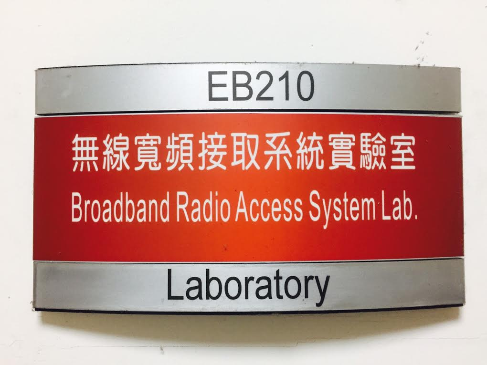

近十幾年來數位通訊與網路技術的發展與應用已遠遠超出人們的預期。網際網路無遠弗界的資訊擷取，E-mail，E-Commerce，E-Learning以及多煤體資訊與娛樂等等皆已變成人們日常生活的一部分。此外，無線通訊的蓬勃發展更增加這些應用的方便性，在不久的將來也可望提供諸如智慧型居家及辦公室環境(Intelligent Home/Office Environment)，高安全性/舒適運輸系統，預防性醫療與位置相關（Location-based）等服務。
近十幾年來數位通訊與網路技術的發展與應用已遠遠超出人們的預期。網際網路無遠弗界的資訊擷取，E-mail，E-Commerce，E-Learning以及多煤體資訊與娛樂等等皆已變成人們日常生活的一部分。此外，無線通訊的蓬勃發展更增加這些應用的方便性，在不久的將來也可望提供諸如智慧型居家及辦公室環境(Intelligent Home/Office Environment)，高安全性/舒適運輸系統，預防性醫療與位置相關（Location-based）等服務。
近十幾年來數位通訊與網路技術的發展與應用已遠遠超出人們的預期。網際網路無遠弗界的資訊擷取，E-mail，E-Commerce，E-Learning以及多煤體資訊與娛樂等等皆已變成人們日常生活的一部分。此外，無線通訊的蓬勃發展更增加這些應用的方便性，在不久的將來也可望提供諸如智慧型居家及辦公室環境(Intelligent Home/Office Environment)，高安全性/舒適運輸系統，預防性醫療與位置相關（Location-based）等服務。
 然而，更多樣性與高品質的服務意味著更高的數據傳輸速率，數十甚至數百Mbps傳輸速率之要求將是相當普遍。高傳輸速率在有線的環境中或許不是太大的限制，但在無線環境下，頻譜資源非常有限，因此，如何在此有限的頻譜資源下達到高傳輸速率/高資料量(Throughput)是未來設計無線通訊系統的最嚴苛挑戰。
本實驗室將以下世代超高速寬頻無線通訊系統作為長期的研究與發展目標；發展MIMO( Multiple Input-Multiple Output )、可調適調變技術 (Adaptive Modulation)、MUD (Multi-User detection)Space-Time Codes、等關鍵傳輸技術；發展高效率的無線資源管理(Radio resource management)技術；與IEEE802.11n國際標準組織同步發展下世代WLAN系統以提升國內無線晶片產業之技術能力，積極參與IEEE 802.20，WWRF (Wireless World Research Forum) 4G行動系統標準組織並貢獻研發成果，比國內業界提早進入下世代行動通訊系統的研發工作。